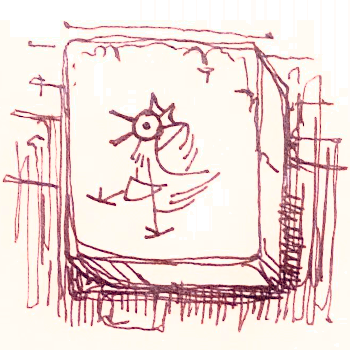

I spent a lot of time in this classroom during the summer as a kid. I’m shocked at how little has changed. The desks have been shuffled around a bit, all pushed up against one corner, and someone’s written a slur on the chalkboard in spray paint, but it’s almost untouched outside of that. On the teacher’s desk there’s even still that paperweight I remember. It’s a big red square with a funny carving of a rooster on it. I’m looking through the desk now, and I’m seeing familiar textbooks, all warped with water and age so the pages all stick together but the covers are mostly still readable. Infrastructure and Orientation. A Sun Above All Else. Winding Exercises A05. I’d thought it would feel worse being here but I mostly don’t feel much at all. There’s nothing here for me.